The Wrangler National Finals Rodeo is the season-ending championship event for the Professional Rodeo Cowboys Association and the Women’s Professional Rodeo Association and is widely acknowledged to be the world’s premier rodeo. Held every December since 1985 at the Thomas & Mack Center in Las Vegas, the Wrangler NFR is ProRodeo’s richest and most prestigious rodeo, and it showcases the very best cowboys, barrel racers and livestock in the world.
2019 WNFR Team Roping Heelers Profiles
Hunter Koch: Hunter Koch – Vernon, Texas ($84,307) First-time WNFR qualifier
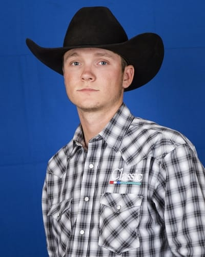
A year ago, Hunter Koch (pronounced Cook) was just finishing up his first year as a heeler in the PRCA.
He spent a good part of that year roping with Billy Bob Brown, a fellow Texan and when it was all said and done, he finished the year in 39th place and won $24,202.
Now, he had earned a national title, has more than tripled his earnings and is headed to his first Wrangler National Finals Rodeo. He will heel for Matt Sherwood who he has been roping with since the Reno Rodeo. They won a bunch of money at Canadian Rodeos and were one of 12 teams that qualified for the Canadian Finals Rodeo (CFR). They were in fourth place.
Professional
2019 Highlights- Partner Matt Sherwood
• Won the Strathmore (Alberta) Stampede
• Won the Innisfail (Alberta) Pro Rodeo
• Won the Brooks (Alberta) Kinsmen Pro Rodeo
• Won That Famous Preston (Idaho) Night Rodeo
• Won the Nicola Valley Pro Rodeo (Merritt, British Columbia)
• Co-champion at the Young Living’s Last Chance Rodeo (Mona, Utah)
Travis Graves: Travis Graves – Jay, Okla. ($103,165) 11-time WNFR qualifier
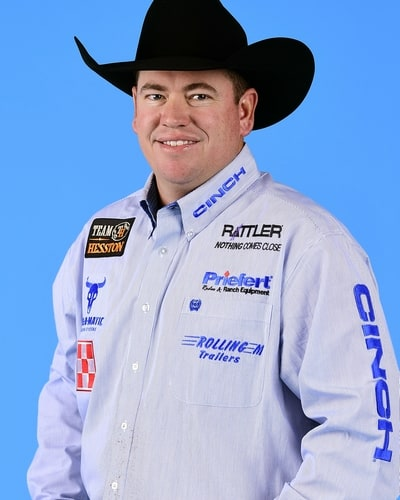
Fall is Travis Graves’ favorite time of the year. It’s a time when he gets to be at his home in Texas, temperatures are cooler, and he gets to prepare for the Wrangler National Finals Rodeo.
Whether he’s been in Oklahoma where he grew up or in Texas, he has always enjoyed the fall. For the 11 years, fall has included plans to spend the first two weeks of December in Las Vegas for the NFR.
He competed at his first NFR in 2008 with Turtle Powell. Then he missed a year, was back in 2010 and has been there every year since. Travis will enter this year’s competition in fifth place with $103,165 in regular season earnings. Most of that was earned with Clay Tryan.
Professional
2019 Highlights- Partner Clay Tryan
• Won the Waller County Fair & Rodeo (Hempstead, Texas)
• Won the Ogden (Utah) Pioneer Days
• Won the Daggott County Centennial Rodeo (Manila, Utah)
• Won the Evanston (Wyo.) Cowboy Days
• Co-champion at the Kansas (Phillipsburg) Biggest Rodeo
Brady Minor: Brady Minor – Ellensburg, Wash. ($97,649) 11-time WNFR qualifier

Brady Minor has had to find room in his trailer for a pony this year and is getting an idea of what his grandparents did to help he and brother Riley in their pursuit of team roping excellence.
That excellence in the arena will see Brady competing at his 11th Wrangler National Finals Rodeo. He’ll start the competition with $97,648 earned during the regular season. He did that roping with his younger brother Riley.
Professional
2019 Highlights – partner Riley Minor
• Won the Sheridan WYO Rodeo
• Won the Dinosaur Roundup Rodeo (Vernal, Utah)
• Won the Chief Joseph (Ore.) Days
• Co-champion at the Helzapoppin (Buckeye, Ariz.)
• Co-champion at the Medicine Hat (Alberta) Stampede
Cole Davison: Cole Davison – Stephenville, Texas ($71,909) 2-time WNFR qualifier
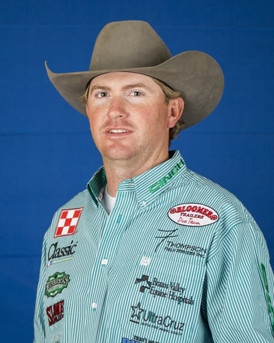
If the family that rodeos together stays together, Cole Davison is in for quite a ride.
A year ago, Cole made his debut appearance at the Wrangler National Finals Rodeo with fellow Texan Tyler Wade. They won $63,308 even though their partnership just started.
In 2018, Cole’s primary partner, Kolton Schmidt, wasn’t among the top 15 headers at the end of the regular season. Cole finished in 13th place.
This year, he found himself in a similar situation when Levi Simpson, the 2016 world champion header finished in 24th. Cole will start this year’s NFR in 14th place with $71,909 in regular season earnings. And, he will be roping again with Tyler Wade.
Professional
2019 Highlights- Partner Levi Simpson
• Won the Livingston (Mont.) Roundup
• Won the Bruce (Alberta) Stampede
• Won the Cranbrook (British Columbia) Pro Rodeo
• Co-champion at the Williams Lake (Alberta) Stampede
Paul Eaves: Paul Eaves – Lonedell, Mo. ($89,447) 8-time WNFR qualifier 2018 World Champion
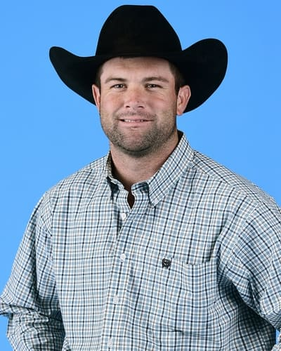
Paul Eaves proved this year that he is not one and done.
The reigning world champion heeler had a partner change in January, a new baby in April, a super busy summer and is headed back to Las Vegas to defend his title. He will be roping at his eighth consecutive Wrangler National Finals Rodeo.
Most of Paul’s regular-season earnings came with Luke Brown doing the heading. He’ll start the competition in ninth place with $89,447 and at the NFR his partnership with Luke will continue.
Professional
2019 Highlights
• Won the San Angelo (Texas) Cinch Shoot-Out Rodeo, with Clay Smith
• Won the West Texas (Abilene) Fair & Rodeo, with Luke Brown
Joseph Harrison: Joseph Harrison – Overbrook, Okla. ($98,278) 3-time WNFR qualifer
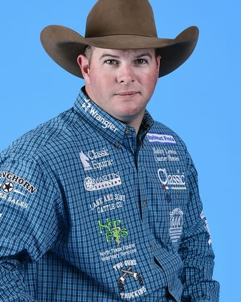
Joseph Harrison grew up at Roff, Oklahoma amid a family of ropers. His father, grandfather and uncle roped. Well, pretty much everyone in his family roped, so he started roping too.
As a teenager, he was looking to improve and decided if he was really going to excel in the rodeo arena, he needed to up his horsemanship. So at 15 and for the next several years he would spend every summer vacation, every spring break and every chance he got with Bobby Lewis, renown Quarter Horse breeder and trainer.
Did it up Joseph’s game? Without a doubt. He joined the PRCA in 2007, the first of two years that he qualified for the College National Finals Rodeo. He continued to work for Bobby and was showing horses.
Professional
2019 Highlights- Partner Chad Masters
• Won the Reno (Nev.) Rodeo
• Won the Walla Walla (Wash.) Frontier Days
• Won the Amarillo (Texas) Tri-State Fair and Rodeo
• Co-champion at the Gooding (Idaho) Pro Rodeo
• Co-champion at the Lewiston (Idaho) Roundup
• Won Tulsa (Okla.) State Fair PRCA Rodeo, with Coleman Proctor
Tyler Worley: Tyler Worley – Berryville, Ark. ($71,190) First-time WNFR qualifier
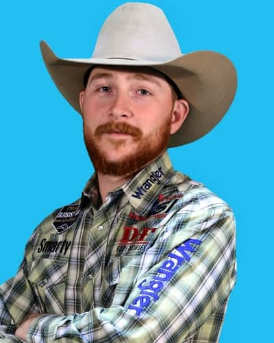
Brittany Worley is getting to have a Wrangler National Finals Rodeo experience that is very rare.
As a child, she got to see her father ride around the Thomas and Mack Arena for the grand entry carrying the Arkansas flag. Now that her husband, Tyler Worley has qualified and is the only resident from Arkansas in this year’s field, she will get to see him do the same.
Tyler Worley finished the regular season in 15th place in the heeling category of the team roping. He will start the NFR with $71,190, He edged out Billy Jack Saebens by just over $2,200 for the final spot. The first call he got was Billy Jack calling to congratulate him. Tyler was still having a hard time believing that it was true.
Professional
2019 Highlights
• Won the West of the Pecos (Texas) Rodeo with Jeff Flenniken
Junior Nogueira: Junior Nogueira – Presidente Prude, Brazil ($115,775) 6-time WNFR qualifier 2016 All-Around World Champion
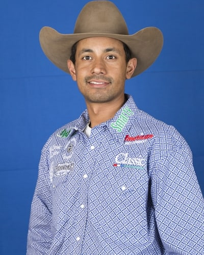
It would be easy to think that Junior Nogueira has the world by the tail, or maybe two feet. The best heeler in the PRCA during the 2019 regular season is known for his signature pull back move in the arena when he’s done his job well.
That has transferred to social media where he now hashtags posts with #pullbackforJesus. It now means so much more to Junior than a successful team roping run who told the Team Roping Journal that he gets his confidence and strength from God.
Junior started roping as a toddler in his native country of Brazil. Both of his parents roped. When he was five, his father was roping calves, had a heart attack and died.
Professional
2019 Highlights- partner Kaleb Driggers
• Won the Dodge City (Kan.) Roundup Rodeo
• Won the Mineral Wells (Texas) PRCA Rodeo
• Won the Wolf Point (Mont.) Wild Horse Stampede
• Won the Cache County Fair And Rodeo (Logan, Utah)
• Won the Magic Valley Stampede (Filer, Idaho)
• Co-champion at the Pasadena (Texas) Livestock Show & Rodeo
• Co-champion at the Oakley Independence Day Rodeo (Oakley City, Utah)
Wesley Thorp: Wesley Thorp – Throckmorton, Texas ($87,296) 4-time WNFR qualifier
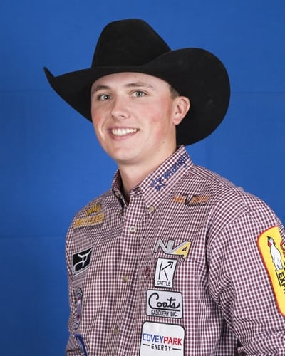
In five years as a member of the Professional Rodeo Cowboys Association, Wesley Thorp has racked up over half a million dollars in earnings and qualified for four Wrangler National Finals Rodeos. Not bad for a ranch kid from Throckmorton, Texas.
He also has two National Intercollegiate Rodeo Association titles to his credit and has won a slew of jackpots. Wesley’s first trip to Las Vegas came with another young roper, Zac Small. They were both still in college. Zac had been accepted to veterinarian school, so he had to focus on his education after that.
Then Wesley started roping with Cody Snow, the 2015 heading rookie of the year. That partnership has stayed strong and they are headed to their third NFR together. They won $108,788 at last year’s NFR and Wesley finished the season in fourth place.
Professional
2019 Highlights – Partner Cody Snow
• Won the Canby (Ore.) Rodeo
• Won the Coleman (Texas) PRCA Rodeo
• Won the Tri-State Rodeo Cinch Shoot-Out (Fort Madison, Iowa)
• Won the Springhill (La.) PRCA Rodeo
• Won the Buffalo (Texas) Stampede PRCA Rodeo
• Co-champion at the Oakley Independence Day Rodeo (Oakley City, Utah)
Jade Corkill: Jade Corkill – Fallon, Nev. ($108,638) 10-time WNFR qualifier 3-time World Champion
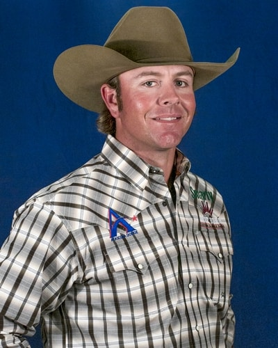
After nine Wrangler National finals Rodeo qualifications, Jade Corkill had fallen out of love with rodeo and roping.
He told his team roping partner, Clay Tryan, after the 2018 winter rodeos that he should start heading for someone else. Jade went home, spent time with his wife, Haley, and two boys, Colby, eight and Kelton, five. His heart wasn’t in practicing or the rodeo grind anymore.
They spent the summer in Nevada at his parent’s place. He entered the Bob Feist Invitational and Spicer Gripp Memorial ropings. He didn’t do any good, confirming his decision to get off the rodeo trail. He finished the 2018 season in 78th place.
Professional
2019 Highlights- Partner Clay Smith
• Won the team roping and co-champion in all-around at the Apache (Okla.) Stampede
• Won the Greeley (Colo.) Stampede
• Won the Eugene (Ore.) Pro Rodeo
• Won the Rancho Mission Viejo Rodeo (San Juan Capistrano, Calif.)
• Co-champion at the Kansas (Phillipsburg) Biggest Rodeo
• Won the Oakdale (Calif.) Saddle Club Rodeo, with Luke Brown
Ryan Motes: Ryan Motes – Weatherford, Texas ($109,166) 5-time WNFR qualifier
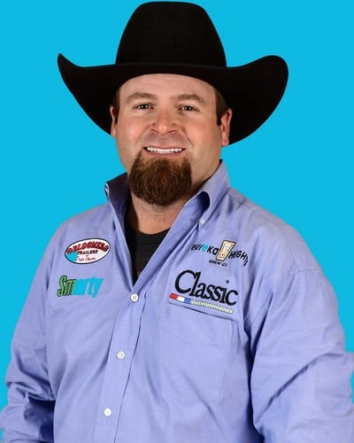
Ryan Motes joined the PRCA in 2001, qualified for the Wrangler National Finals Rodeo in 2001 and is headed back to Las Vegas again this year in second place.
He’s had the best regular season of his rodeo career earning $109,166 before he ever rides into the Thomas and Mack Center. His father, David Motes, roped to a world title (heading) in Oklahoma City with Ryan’s uncle, Dennis Motes. David qualified for the NFR a total of 22 times.
Ryan’s first appearance in the Thomas and Mack arena was long before he ever competed there. In 1989, four years after the event moved to Las Vegas. The openings were being coordinated by the Flying U Rodeo Company and one of them centered around rodeo kids. Ryan Motes was one of those kids and at nine years old, he rode his horse into the arena like a champ.
Professional
2019 Highlights- Partner Cole Proctor
• Won The American (Arlington, Texas)
• Won the Lea County PRCA Rodeo (Lovington, N.M.)
• Won the Tri-State Rodeo Cinch Shoot-Out (Fort Madison, Iowa)
• Co-champion at the Lawton (Okla.) Rangers Rodeo
Chase Tryan: Chase Tryan – Helena, Mont. ($86,345) 3-time WNFR qualifier
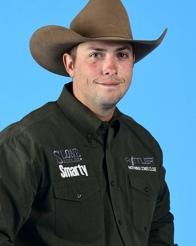
A year ago, Chase Tryan had roped with four different partners to get him to the Wrangler National Finals Rodeo.
One of those was Brenten Hall, who he has roped with all year and this year they both qualified for rodeo’s championships. It’s Chase’s third trip to the NFR and Brenten’s first.
Chase had faith in Brenten’s ability from the beginning. They set a goal of Brenten winning Rookie of the Year and hoping to get to Vegas, but he didn’t get to rope at the big winter rodeos and fell short.
He did, however, continue to rope with Chase and help him make it to his second NFR. Chase roped with Bubba Buckaloo in Las Vegas last year. They won $106,814 in the Thomas and Mack Center and Chase finished the season in sixth place.
Professional
2019 Highlights- Partner Brenten Hall
• Won the Washington (Puyallup) State Fair Pro Rodeo
• Won the Leduc (Alberta) Black Gold Pro Rodeo
• Won the IPE and Stampede (Armstrong, British Columbia)
Caleb Anderson: Caleb Anderson – Mocksville, N.C. ($72,390) First-time WNFR qualifier
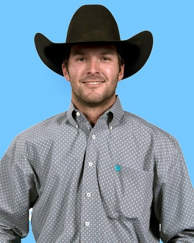
If Caleb Anderson needs some motivation to rope, he can always go home to North Carolina and work. His family is involved in the logging industry and he has been a fifth-generation logger.
Now he is one of the best heelers in the PRCA and is headed to his first Wrangler National Finals Rodeo. It’s been quite a journey for the former student at New Mexico Junior College in Hobbs. He joined the PRCA in 2010 and was also competing in the International Professional Rodeo Association where he won championships from 2013 -2015.
His good friend Cory Kidd V, also from North Carolina told Caleb he should come rope for a whole year. They did that together last year. Caleb finished in 32nd place.
Jake Long: Jake Long – Coffeyville, Kan. ($106,896) 9-time WNFR qualifier
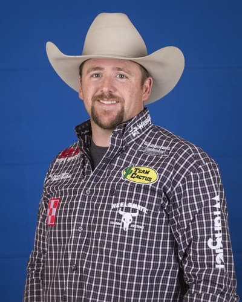
Jake Long has had one of the best regular seasons of his career roping behind several great headers. He will enter his ninth Wrangler National Finals Rodeo in fourth place with $106,896 in regular season earnings.
He started off the year with wins at the National Western Stock Show Rodeo in Denver and the RAM National Circuit Finals Rodeo in Kissimmee, Florida with Clay Smith. Then in June he started roping with Dustin Egusquiza. He finished up the season with Dustin who ended up 16th in the world standings. He and Dustin have already started earning checks in the 2020 season.
When Jake ropes at this year’s NFR, he will be heeling for three-time world champion Clay Tryan. He and Clay won $30,000 each at a jackpot in North Dakota in June and are looking forward to running 10 steers in Vegas.
Professional
2019 Highlights- Partner Clay Smith
• Won the Ram National Circuit Finals Rodeo (Kissimmee, Fla.)
• Won the National Western Stock Show and Rodeo (Denver, Colo.)
• Won the Texas (Waco) Circuit Finals Rodeo
• Won the Ropin Dreams (Jourdanton, Texas)
• Won the Sikeston (Mo.) Jaycee Bootheel Rodeo, with Dustin Egusquiza
• Won the Black Hills Roundup (Belle Fourche, S.D.), with Dustin Egusquiza
• Co-champion at the Lewiston (Idaho) Roundup, with Dustin Egusquiza
Kyle Lockett: Kyle Lockett – Visalia, Calif. ($98,730) 8-time WNFR qualifier
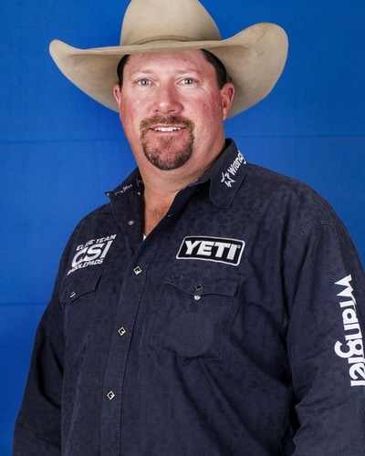
When Kyle Lockett rides into the Thomas and Mack Center for the 2019 Wrangler National Finals Rodeo, he will be the oldest team roping heeler there at 42.
But that’s only part of what makes his story so remarkable. This is Kyle’s eighth qualification for rodeo’s championship, but the first in 15 years. He joined the PRCA in 1997, won the rookie title in the heeling and qualified for his first NFR. He was there again in 1998.
He was there again in the at the beginning of the next century and in 2002 he and partner Wade Wheatley finished as reserve world champions. They had roped together growing up and Kyle finished his rodeo career with Wade in 2005, or so he though.
Professional
2019 Highlights
• Won RodeoHouston (Texas), with Ty Blasingame
• Won the San Angelo (Texas) Rodeo, with Aaron Tsinigine
• Won the Santa Maria (Calif.) Elks Rodeo, with Lane Santos Karney
• Won the all-around and tie-down roping at the Tehachapi (Calif.) Mountain Rodeo
How does a breakaway rope work?
The rope is tied to the saddle horn with a string. When the calf hits the end of the rope, the rope is pulled tight and the string breaks. The breaking of the string marks the end of the run. The rope usually has a small white flag at the end that makes the moment the rope breaks more easily seen by the timer. In conjunction with the Wrangler® National Finals Rodeo (NFR) at Globe Life Field in Arlington, Texas, women ropers will compete for the 2020 world championship: The Wrangler® National Finals Breakaway Roping (NFBR) and a $200,000 purse at this three-day event.